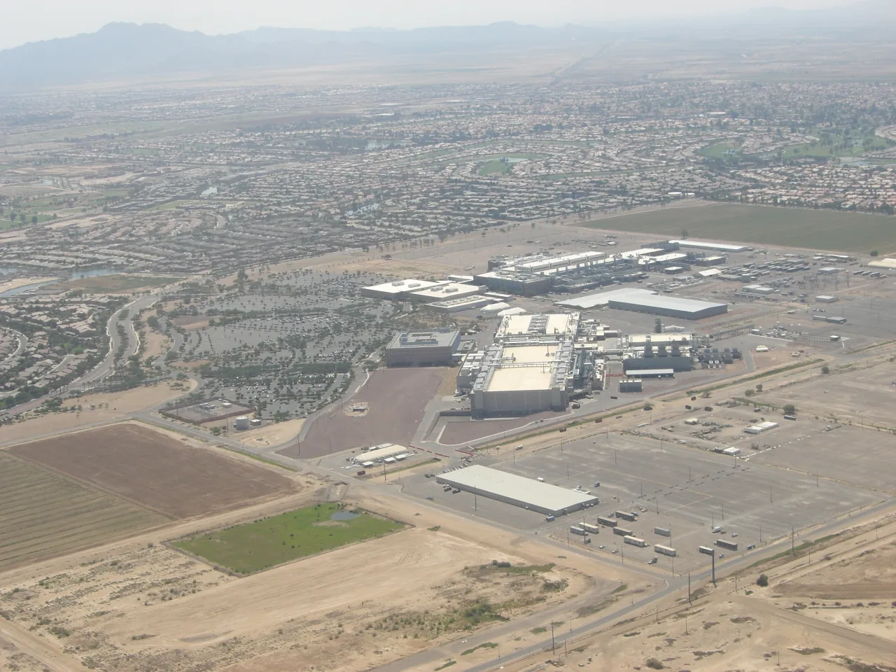

인텔을 둘러싼 질문은 예전처럼 “반도체 왕좌를 되찾을 수 있나”로만 정리되지 않습니다. 지금 주주가 더 궁금해하는 것은 AI 수요가 인텔의 제품 매출을 얼마나 오래 받쳐 주는지, 그리고 파운드리 투자가 손실을 줄이는 속도로 돌아서고 있는지입니다. 주가가 반응하는 뉴스는 화려하지만, 인텔의 회복은 공장 가동률, 서버 CPU 경쟁력, 18A 수율, 설비투자 부담이 동시에 맞아야 가능한 일입니다.
인텔은 2026년 1분기에 매출 136억 달러를 기록했고 전년 대비 성장률을 회복했습니다. 동시에 GAAP 기준으로는 대규모 순손실을 냈고, 조정 잉여현금흐름도 여전히 마이너스였습니다. 이 조합은 인텔을 해석할 때 가장 중요합니다. 매출 회복은 분명한 신호지만, 그 매출이 파운드리 고정비와 구조조정 비용을 이길 만큼 충분한지는 아직 별도 검증이 필요합니다.
그래서 이번 글은 인텔을 AI PC, 미국 반도체 정책, 파운드리 독립 같은 거대한 구호가 아니라 숫자의 순서로 보겠습니다. 먼저 돈을 버는 Intel Products가 얼마나 버티는지 보고, 그다음 돈을 쓰는 Intel Foundry가 손실을 줄일 근거를 만드는지 확인해야 합니다. 마지막으로 18A가 제품 출하와 외부 고객 확보를 동시에 밀어 올릴 수 있는지 보셔야 합니다.
돈을 버는 쪽과 쓰는 쪽이 갈라졌나

인텔의 투자 포인트는 이제 한 회사 안에 두 개의 회계가 있는 것처럼 봐야 선명해집니다. Intel Products는 클라이언트 PC와 데이터센터 CPU를 팔아 현금을 만들어야 하는 사업입니다. Intel Foundry는 자체 제품과 외부 고객을 위해 공정을 개발하고 공장을 돌리는 사업입니다. 두 사업이 같은 방향으로 좋아지면 인텔 회복의 그림이 강해지지만, 제품이 벌어도 파운드리가 더 크게 쓰면 주주는 기다림의 비용을 떠안게 됩니다.
2025년 전체로 보면 Intel Products는 약 491억 달러의 매출과 127억 달러 수준의 영업이익을 냈습니다. 같은 기간 Intel Foundry는 약 178억 달러의 매출을 기록했지만 영업손실이 103억 달러 수준이었습니다. 이 숫자는 인텔이 단순히 “매출이 큰 반도체 회사”가 아니라, 수익을 내는 제품 사업과 아직 회수되지 않은 제조 투자 사이의 균형을 다시 맞춰야 하는 회사라는 점을 보여줍니다.
주주 입장에서 중요한 것은 제품 사업의 이익이 파운드리 손실을 얼마나 빨리 흡수하느냐입니다. PC 수요가 회복되고 서버 CPU 출하가 늘어도 매출총이익률이 흔들리면 현금흐름은 충분히 좋아지지 않습니다. 반대로 파운드리 손실이 분기마다 줄고 외부 매출 비중이 늘면 시장은 인텔을 단순한 CPU 회사가 아니라 미국 내 첨단 제조 옵션으로 다시 평가할 수 있습니다.
18A는 기대가 아니라 증명 순서
관련 영상
적자 탈출로는 부족한 인텔 턴어라운드 조건 분석
인텔 18A는 투자자에게 기술 이름 이상의 의미를 가집니다. Panther Lake 같은 클라이언트 제품과 Clearwater Forest 같은 서버 제품이 18A에서 생산되고, 이 공정이 고수율과 충분한 물량으로 이어져야 제품 사업의 원가가 낮아집니다. 동시에 외부 고객이 18A나 첨단 패키징을 선택해야 파운드리 사업의 고정비 부담도 줄어듭니다.
문제는 공정 발표와 손익 개선 사이에 시간이 있다는 점입니다. 새 공정은 초기에 수율 안정화 비용이 크고, 고객 검증도 오래 걸립니다. 인텔은 18A가 미국에서 개발·제조되는 첨단 노드라는 점을 강조하지만, 주주는 그 문장이 매출총이익률, 출하 가능 물량, 외부 고객 계약으로 바뀌는지 확인해야 합니다.
특히 18A가 자체 제품에만 쓰이면 인텔 제품 경쟁력에는 도움이 되지만 파운드리 외부 매출의 가치는 제한될 수 있습니다. 반대로 외부 고객이 늘어도 내부 제품의 원가가 안정되지 않으면 전체 손익은 기대보다 천천히 개선됩니다. 그래서 18A의 성공 여부는 “첫 제품이 나왔다”가 아니라 “제품 원가와 파운드리 손실이 동시에 좋아졌다”로 판단해야 합니다.
서버 CPU가 AI 예산 안에 남을 수 있나
AI 시장에서는 GPU가 headline을 가져가지만 데이터센터 예산 안에는 CPU, 네트워크, 메모리, 스토리지, 전력 관리가 함께 들어갑니다. 인텔이 주주에게 증명해야 할 부분은 AI라는 단어를 쓰는 것이 아니라, 데이터센터 고객이 GPU 서버를 늘릴수록 Xeon과 관련 플랫폼 지출도 함께 유지된다는 점입니다.
2026년 1분기 인텔의 Data Center and AI 매출은 전년 대비 증가했습니다. 이 흐름이 의미를 가지려면 서버 CPU의 가격과 물량이 함께 방어되어야 합니다. AMD가 서버 시장에서 계속 압박하고 있고, 클라우드 고객은 자체 칩과 맞춤형 반도체를 더 많이 검토하고 있습니다. 인텔이 단순히 기존 고객을 지키는 수준에 그치면 회복 속도는 느릴 수밖에 없습니다.
PC 쪽도 비슷합니다. AI PC는 좋은 마케팅 언어지만, 실제로는 교체 주기, 기업용 PC 예산, 전력 효율, 노트북 제조사 설계 채택 수가 더 중요합니다. Panther Lake가 일정대로 출하되어도 고객이 더 높은 가격을 받아들이지 않으면 마진 개선 효과는 제한됩니다. 주주는 “AI PC 출하”보다 “제품 믹스와 매출총이익률이 같이 개선되는지”를 먼저 보셔야 합니다.
주주가 확인할 숫자
인텔을 볼 때 가장 먼저 적어 둘 숫자는 네 가지입니다. 첫째, Intel Products의 매출과 영업이익입니다. 둘째, Intel Foundry의 영업손실 축소 폭입니다. 셋째, 영업현금흐름과 조정 잉여현금흐름의 차이입니다. 넷째, 설비투자와 정부 인센티브, 파트너 기여금이 실제 현금 부담을 얼마나 줄였는지입니다.
2026년 1분기 인텔은 영업활동 현금흐름을 플러스로 만들었지만, 대규모 설비투자 이후 조정 잉여현금흐름은 마이너스였습니다. 이 지점은 단기 투자자가 놓치기 쉽습니다. 회계상 조정 이익이 좋아지는 것과 주주에게 남는 현금이 늘어나는 것은 다른 문제입니다. 인텔은 설비투자를 줄이기만 해도 안 되고, 줄인 설비투자가 미래 제품 경쟁력을 해치지 않아야 합니다.
두 번째로 볼 것은 파운드리 외부 매출입니다. 인텔 내부 제품을 만드는 매출은 필요하지만, 시장이 파운드리 사업에 높은 가치를 주려면 외부 고객이 의미 있게 늘어야 합니다. 외부 고객의 이름이 공개되지 않더라도 첨단 패키징 매출, 선급금, 장기 계약, 고객 인증 단계가 구체적으로 보이면 손실 축소의 신뢰가 커집니다.
세 번째는 경쟁사의 압박입니다. AMD는 서버와 PC에서 인텔의 가격 방어력을 시험하고, 엔비디아와 브로드컴은 AI 인프라 예산을 다른 방향으로 빨아들입니다. 인텔이 AI 수혜주로 평가받으려면 GPU를 이기는 이야기가 아니라, AI 인프라가 커질수록 CPU와 패키징, 파운드리 선택지로 같이 들어가는 이야기를 숫자로 보여줘야 합니다.
결론적으로 인텔은 싸 보인다는 이유만으로 판단하기 어려운 종목입니다. 제품 사업은 여전히 큰 현금창출력을 가질 수 있지만, 파운드리 사업은 긴 시간과 큰 자본을 요구합니다. 따라서 매수 여부보다 먼저 확인할 것은 다음 두세 분기 동안 제품 이익, 파운드리 손실, 잉여현금흐름이 같은 방향으로 개선되는지입니다.
인텔의 회복은 극적인 한 장면보다 느린 표의 변화에 가깝습니다. 18A 출하, Clearwater Forest 일정, AI PC 채택, 서버 CPU 점유율, 외부 파운드리 고객, 설비투자 부담이 분기마다 조금씩 이어져야 합니다. 이 흐름이 끊기면 주가는 다시 “기대는 큰데 비용은 더 큰 회사”로 평가받을 수 있고, 흐름이 이어지면 미국 반도체 제조 회복의 핵심 옵션으로 다시 가격이 매겨질 수 있습니다.
이 글은 특정 가격대의 매수나 매도를 권하는 글이 아닙니다. 인텔을 보유했거나 관심 있게 보는 독자라면 다음 실적에서 매출 성장률보다 먼저 영업현금흐름, 조정 잉여현금흐름, Foundry 손실 폭, Products 영업이익률을 같은 표에 적어 두는 편이 좋습니다. 그 표가 좋아질 때 인텔의 이야기도 훨씬 단단해집니다.